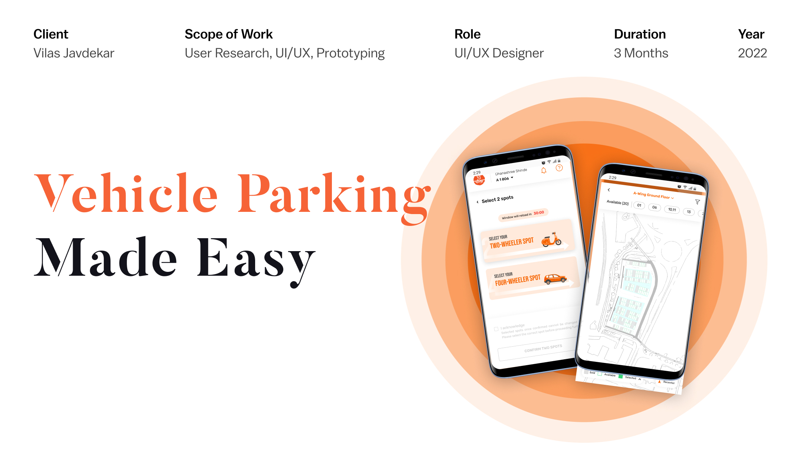
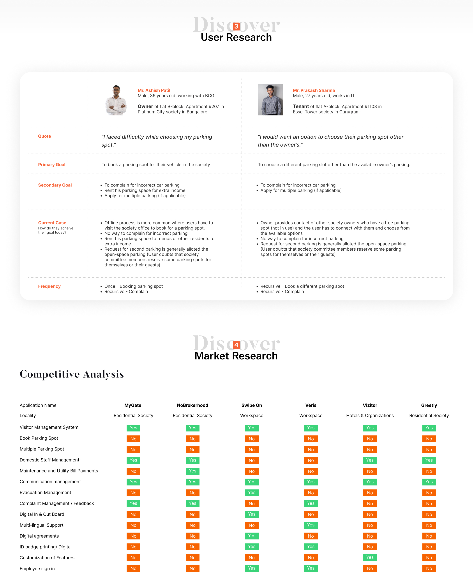
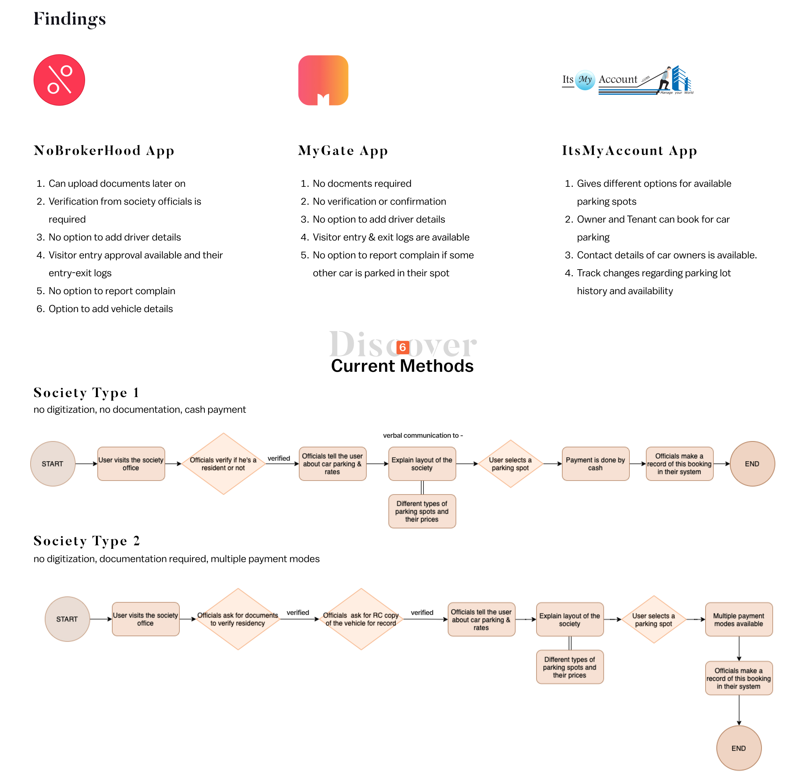
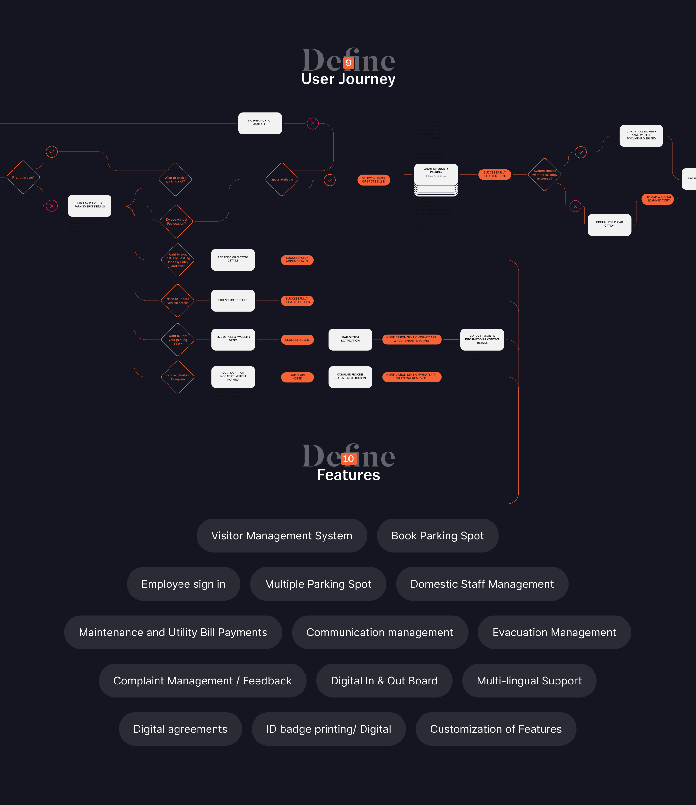
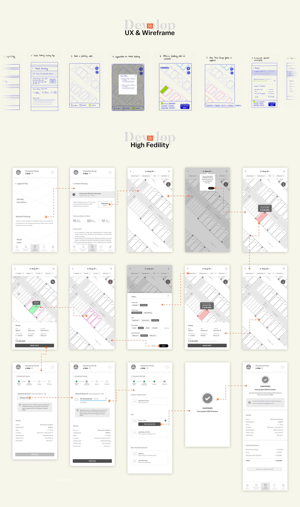
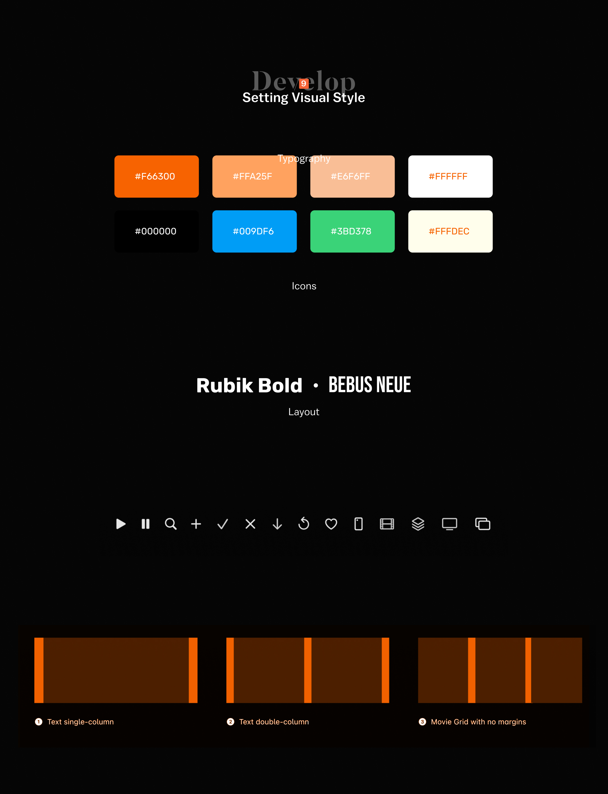
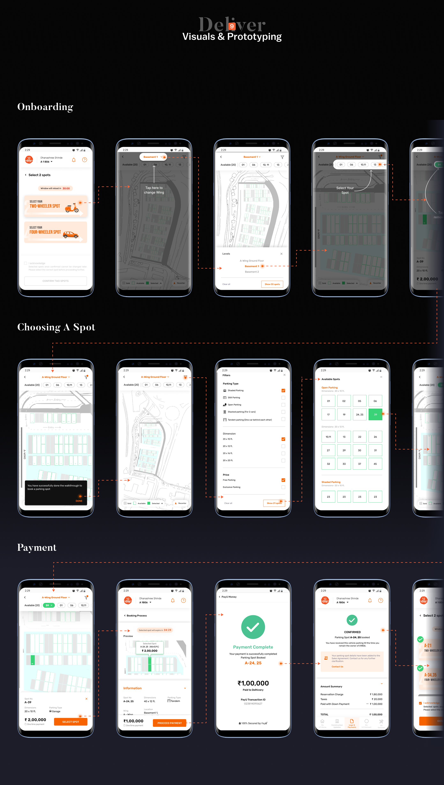

Designing the digital forefront of a real estate company; to be the face of its post-payment services.
Vilas Javdekar & VJ First
Special tie-ups with neighborhood destinations. This includes sports facilities, educational institutions and healthcare destinations. VJ homeowners get priority treatment.
VJ - First Vehicle Parking
VJ Vehicle Parking is an elegant solution to help VJ users to Book their Parking Slots and avail services around the Vehicle and society regulations.
Problem Statement
How can VJ provide a seamless parking experience for their residents?
Process
User Research
"I faced difficulty while choosing my parking spot."
Primary Goal: To book a parking spot for their vehicle in the society.
Secondary Goal: To complain for incorrect car parking. Rent his parking space for extra income. Apply for multiple parking (if applicable).
"I would want an option to choose their parking spot other than the owner's."
Primary Goal: To choose a different parking slot other than the available owner's parking.
Secondary Goal: To complain for incorrect car parking. Apply for multiple parking (if applicable).
Market Research — Competitive Analysis
Analyzed competitor apps including MyGate, NoBrokerHood, Swipe On, Varis, Visitor, and Greety across features like visitor management, parking spots, domestic staff management, utility bill payments, communication management, and more.

Findings
Current Methods
Society Type 1
No digitization, no documentation, cash payment. The user visits the society office, officials verify residency, explain parking layout and rates verbally, user selects a spot, pays by cash, and officials make a record in their system.
Society Type 2
No digitization, documentation required, multiple payment modes. User visits the society office, officials ask for documents to verify residency, ask for RC copy of the vehicle for record, explain parking layout and rates, user selects a spot, and multiple payment modes are available.

Insights
Goals
User Journey
Mapped the complete user journey covering first-time users booking a parking spot, adding RFID or FastTag details, editing vehicle details, renting a parking spot, and filing complaints for incorrect vehicle parking. Each flow includes decision points, success states, and error handling.

Features
UX & Wireframe
Created low-fidelity wireframes exploring the full parking flow: from the vehicle parking tab, to booking a parking slot, navigation on the society map layout, selecting a parking spot, pricing and payment options, and the final confirmation screen.
High Fidelity
Translated wireframes into polished high-fidelity screens featuring the interactive society map, spot selection interface, booking details, payment flow, and confirmation screens.

Setting Visual Style
Color Palette
Typography
Layout

Visuals & Prototyping
Onboarding
The onboarding flow guides users through selecting their vehicle type (two-wheeler or four-wheeler), viewing the society map layout, and navigating to their wing and floor to explore available parking spots.
Choosing A Spot
Users can browse the interactive map, filter by parking type, view available spots with pricing, and walk through the lot with a visual guide before making their selection.
Payment
After selecting a spot, users proceed through the booking process, choose a payment method, receive confirmation of their payment, and get a detailed summary of their parking reservation.
